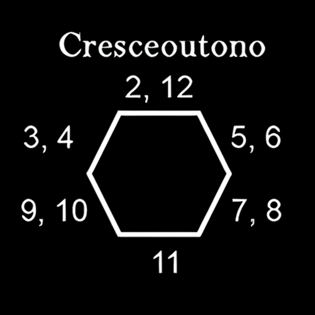

<div id="hexagon-modal" class="modal">
    <div class="modal-content">
        <span class="close-button">&times;</span>
        <div id="modal-map-container"></div>
        <div id="modal-controls-container">
            <div id="text-window"></div>
            <div id="new-image-container">
                
            </div>
            <table id="temperature-table">
                <tr>
                    <td>d12</td>
                    <td>Calor (MESES QUENTES)</td>
                </tr>
                <tr>
                    <td>1 - 8</td>
                    <td><b>Ameno</b>. Sem alterações.</td>
                </tr>
                <tr>
                    <td>9 - 11</td>
                    <td><b>Calor</b>. Água precisa ser consumida em cada Quarto de Dia para ficar DESIDRATADO.</td>
                </tr>
                <tr>
                    <td>12</td>
                    <td><b>Escaldante</b>. Água precisa ser consumida em cada Quarto de Dia para não ficar DESIDRATADO. Personagens usando armadura precisam fazer uma rolagem de Resiliência em cada Quarto de Dia, falha significa -1 de AGILIDADE.</td>
                </tr>
            </table>
            <div id="modal-right">
                <h2>Rolador de Dados</h2>
                <div class="dice-roller">
                    <button id="roll-2d6">Rolar 2d6</button>
                    <p>Resultado: <span id="2d6-result"></span></p>
                </div>
                <div class="dice-roller">
                    <button id="roll-1d12">Rolar 1d12</button>
                    <p>Resultado: <span id="1d12-result"></span></p>
                </div>
            </div>
        </div>
    </div>
</div>